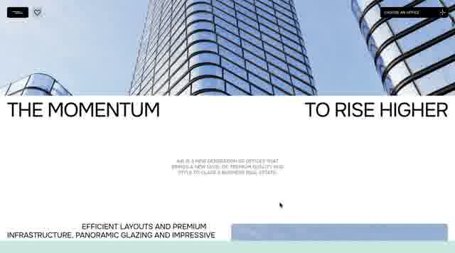
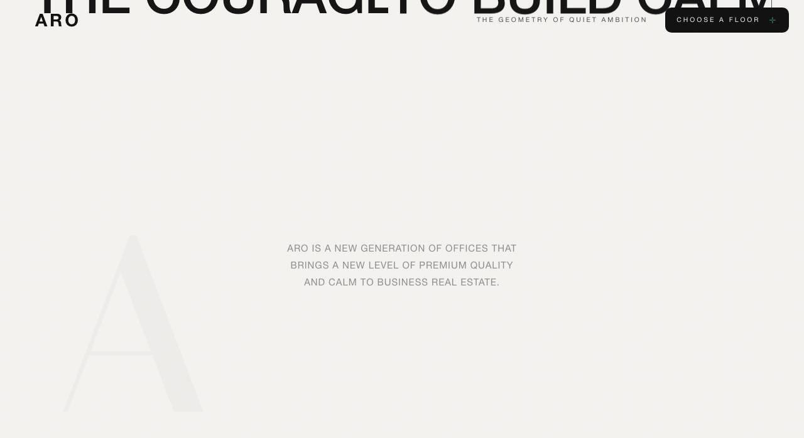
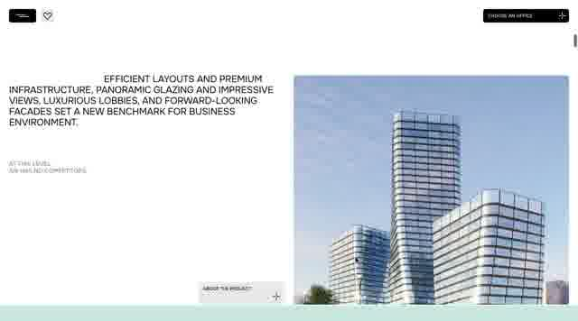
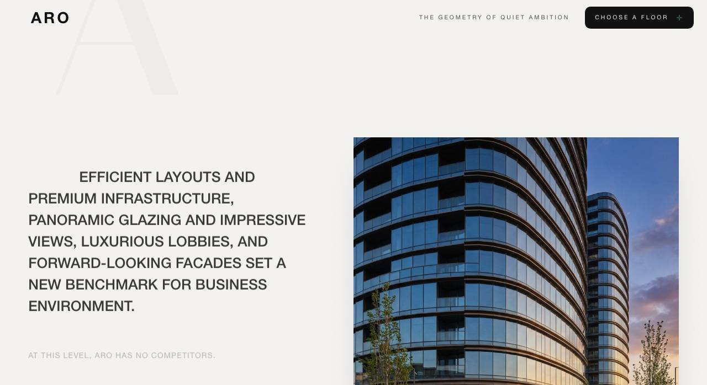
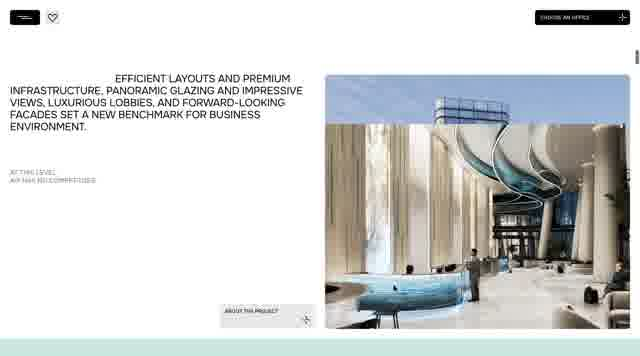
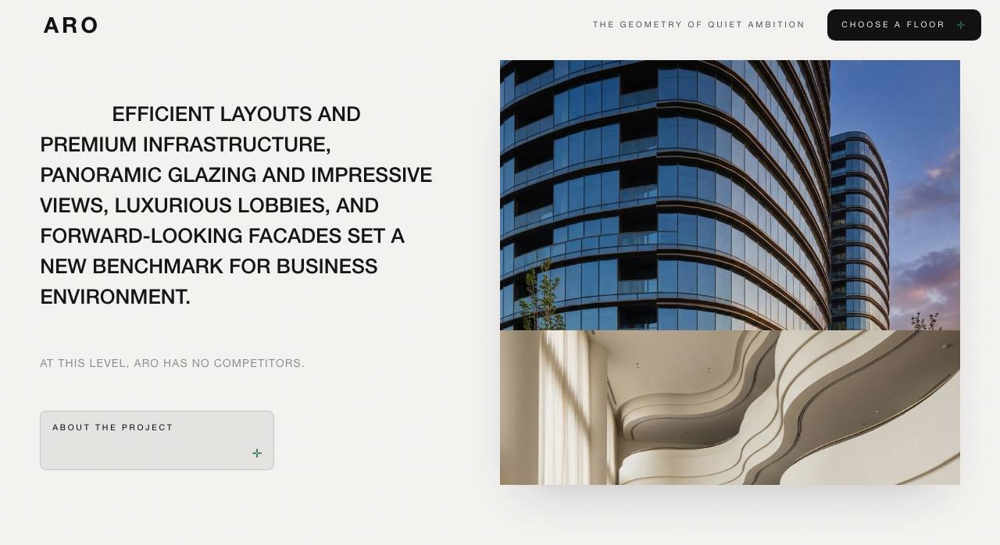

i2 hero-organism — покадрова хорео-звірка з записом Єгора 21.07.27 (еталон)
Зліва = ЖИВИЙ запис (2560×1424, 60fps, 13.74s; хвіст t10.5–13.5 = Єгор зупинив скрол → ефективний span t0.3–10.5s).
Справа = наш білд (p по всій сторінці). Фасад = ARO-transfer (наші Higgsfield-асети), звіряється ХОРЕОГРАФІЯ.
Акт 1, біт 0 — гігантські літери + скульптура
реф t=0s (p≈0.0)білд p=0.00
Акт 1, біт 1 — літери колапсують у хедер-лого (FLIP, м'який E2-політ)
реф t=1.0s (p≈0.07)білд p=0.11
Акт 1→2 — фото-панель накриває знизу (секція сама їде поверх пінованих літер)
реф t=1.5s (p≈0.12)білд p=0.19
Акт 2 — фото full-bleed (вежа знизу-вгору)
реф t=2.0s (p≈0.17)білд p=0.26
Акт 2 — spread-row від країв («THE MOMENTUM / TO RISE HIGHER» ↔ «THE COURAGE / TO BUILD CALM»)
реф t=3.0s (p≈0.26)білд p=0.41
Акт 3 — вхід: sticky-текст + media-панель (будова)


реф t=4.75s (p≈0.44)білд p=0.52
Акт 3 — hold: текст стоїть, медіа дрейфує


реф t=6.75s (p≈0.63)білд p=0.63
Акт 3 — media-swap: будова → лобі-інтер'єр


реф t=9.0s (p≈0.85)білд p=0.78
Акт 4 — format-row: «A NEW PREMIUM FORMAT» знизу
реф t=9.75s (p≈0.93)білд p=0.96
✅ ПОРЯДОК актів = 1-в-1 (kinetic→cover→spread-row→sticky+media→swap→format-row). Нормалізований темп близький: act3-вхід реф 0.44 / білд 0.52 · hold-центр 0.63/0.63 · format 0.93/0.96.
⚠️ КАЛІБРУВАННЯ: (1) акт 1+2 у білді пропорційно довший (full-bleed на 0.26 vs 0.17; spread на 0.41 vs 0.26) — якщо око скаже «до тексту довго їхати», стиснути act1 280vh → ~240vh; (2) media-swap у білді трохи раніше (0.78 vs 0.85) — межа swap-вікна +0.05 якщо треба. Обидва в межах шуму швидкості скролу Єгора.